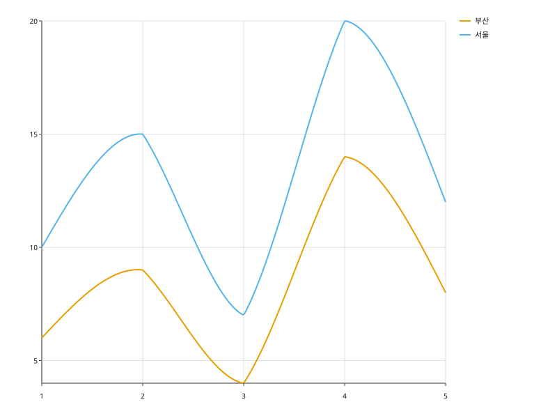

x 순으로 점을 이어 선을 그린다. x 는 수치 또는 날짜를 받는다.
import svgplot as sp
SALES = {
"day": [1, 2, 3, 4, 5, 1, 2, 3, 4, 5],
"sales": [10.0, 15.0, 7.0, 20.0, 12.0, 6.0, 9.0, 4.0, 14.0, 8.0],
"region": ["서울"] * 5 + ["부산"] * 5,
}sp.lineplot(SALES, x="day", y="sales")sp.lineplot(SALES, x="day", y="sales", hue="region")
sp.lineplot(SALES, x="day", y="sales", hue="region", interpolate="cubic")from datetime import date
TRAFFIC = {
"day": [date(2024, 1, 1), date(2024, 2, 1), date(2024, 3, 1), date(2024, 4, 1)],
"hits": [120.0, 180.0, 150.0, 240.0],
}
sp.lineplot(TRAFFIC, x="day", y="hits")